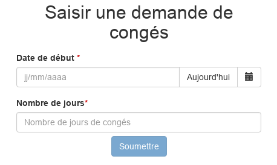
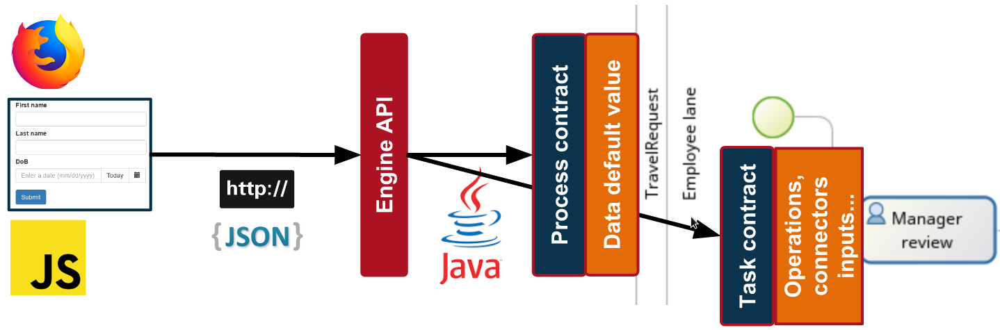

Checklist
- Download Bonita Camp resources: auto
- Make sure that latest version of Studio is correctly installed (see exercises instructions)
- Install latest Oracle JDK 8
- Start the Studio and click on Portal button
- We recommend to use Chrome or Firefox as your default web browser for development
Agenda
- BPM Goals
- Bonita Components
- BPMN 2.0
- Data & Contracts
- Forms & Pages
- Actors
- Connectors
- BPM-based applications
- Deployment
BPM Goals
Collaborate during the definition and execution of Business Processes
Track process execution
Optimize processes
Bonita Components
| Bonita Studio | ||
| Bonita Engine | } | Bonita Platform |
| Bonita Portal | ||
Bonita Studio: Process Editor

Bonita Studio: UI Designer

Bonita Engine
In charge of process execution (no built-in UI)
Based on Java SE 8
Packaged with the Bonita Portal in a Java web application
Requires:
- A Java EE application server
- A JDBC compliant transactional database
Bonita Portal
End user and administration web interface
Displays the list of available tasks
Allows to deploy and configure processes

Bonita Portal: Forms
Renders forms created with UI Designer
Served by Bonita Portal
Bonita Portal: Applications
Allows to deploy Business Applications composed of custom pages implemented with the UI Designer

BPMN 2.0
Standard notation (OMG) for process modeling
A process is represented by a Pool
Key elements:
 | Start event |
 | Human task |
 | Automated/Service task |
 | End event |
Elements are linked together by Transitions →
Gateways
3 types of gateways:
 | Exclusive |
 | Parallel |
 | Inclusive |
Conditions are defined on gateway outgoing transitions. No condition for parallel gateways
Gateways should be placed in a symmetrical manner when possible:

Exercise 1
Modeling a basic process
Download the instructions and corrections from this link:
Data: scopes & life cycles
BDM (Business Data Model)
Accessible from anywhere, stored in a dedicated database
+ Use case: store any kind of data manipulated by processes instances and/or applications.
Form data
Accessible within form, never persisted
+ Use case: process and store data displayed and updated in forms
Data: types
| BDM | Form data |
|---|---|
|
|
Documents: files with revisions can be declared at process level
Contracts
Set of required input parameters with validation rules.
Data sent by forms must satisfy a contract in order to:
- Start a process
- Execute a human task
Contributes to the decoupling of process logic and user interface.
Architecture overview
Sending data from the form to the business variable
Exercise 2
Adding data and specifying contracts
Forms & Pages
Created with UI Designer with containers and widgets
Based on AngularJS and Bootstrap.
2 types of forms:
- Editable forms that must satisfy a contract
- Process instantiation
- Human tasks (no forms on service tasks)
- Overview form (read-only) defined at pool level
Widgets
A set of widgets is available out of the box (text field, select, date picker...)
Custom widgets can be created with the UI Designer
Architecture overview
Display process variable in a form

Exercise 3
Creating forms
Actors
Declared at pool level. Associated with lanes or human tasks. 2 options available: actors and actors filters
| Benefits | Limitations | |
|---|---|---|
| Actors | Always up to date with organization | Mapping that can not rely on business/process data |
| Actor filters | Mapping that can be based on business/process data | Executed only once at task instantiation |
Exercise 4
Configuring actors
Connectors
Allows processes to interact with IS (opposite of the Bonita APIs)
A set of standard connectors is shipped in the Studio
Custom connectors can be:
- Implemented using the Studio or other Java IDEs
- Imported from the Community website
Exercise 5
Using a connector to send an email
BPM-based applications
Combine processes together to handle a real business use case
Respect the MVC design pattern:
- Model is the business data model
- View is a combination of pages and process forms
- Controller is a set of processes
Applications are deployed and hosted in Bonita Portal
Exercise 6
Create a leave request application
Process Deployment
Main steps for process deployment:
| 1. Process configuration 2. Bar file generation |
Studio |
| 3. Bar deployment 4. Process configuration 5. Process activation |
Portal |
Application Deployment
Main steps for application deployment:
| 1. Export pages from UI Designer 2. Export the application |
Studio |
| 3. Import pages as Resource 4. Import the application |
Portal |
Thank you for your attention
Any questions? Do not hesitate.
Extra Resources:
- Documentation - documentation.bonitasoft.com
- Corporate Website - bonitasoft.com
- Community - community.bonitasoft.com
- GitHub - github.com/bonitasoft